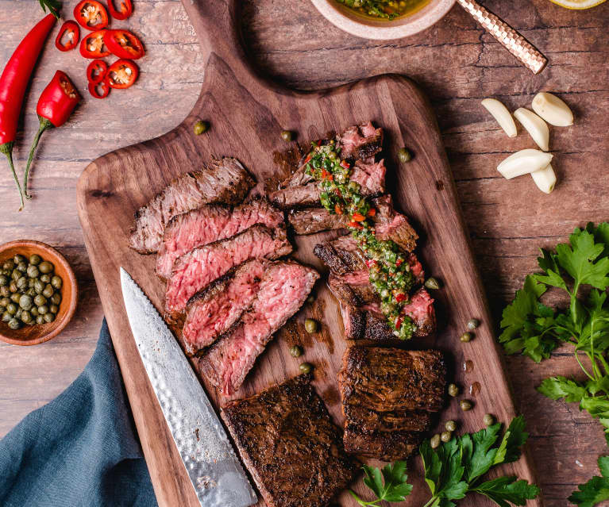

Description
I dont think a great steak needs much other than salt and pepper, but this creamy fusion of butter and Sriracha sauce certainly doesnt hurt. It starts with a base of caramelized miso, which deepens its savory-nutty flavor, and adds body to the finished dressing. It brings tang and a gentle pulse of heat from the vinegary Sriracha.
Ingredients
- New York Strip steak
- Rock salt
- Extra virgin olive oil
- Salted butter
- white miso
- Sriracha
Steps
- Heat a dry large heavy skillet, preferably cast iron, over medium-high. Season steaks generously with salt, then coat with oil. When skillet is very hot, cook steaks, turning every 2 minutes or so, until deeply browned and an instant-read thermometer inserted into thickest part registers 120° for medium-rare (internal temperature should climb to about 130° as steaks rest), 8–10 minutes. Transfer steaks to a wire rack set inside a rimmed baking sheet and let rest 10 minutes.
- Meanwhile, melt 1 Tbsp. butter in a small saucepan over medium heat. Add miso and cook, stirring and scraping bottom of pan constantly, until miso darkens a few shades and smells very toasty and nutty (it will stick to pan), about 4 minutes. Pour in ¼ cup water and whisk until incorporated, scraping bottom of pan to release any browned bits. Add Sriracha and remaining 4 Tbsp. butter; cook, whisking constantly, until butter is melted and sauce is smooth. Season with salt. If your miso is a bit lumpy, use an immersion blender to blend sauce directly in pan until smooth (or carefully blend in a regular blender).
- Transfer steaks to a cutting board and slice against the grain. Arrange on a platter and spoon some butter sauce over; top with scallions. Serve remaining butter sauce alongside.
Return to homepage